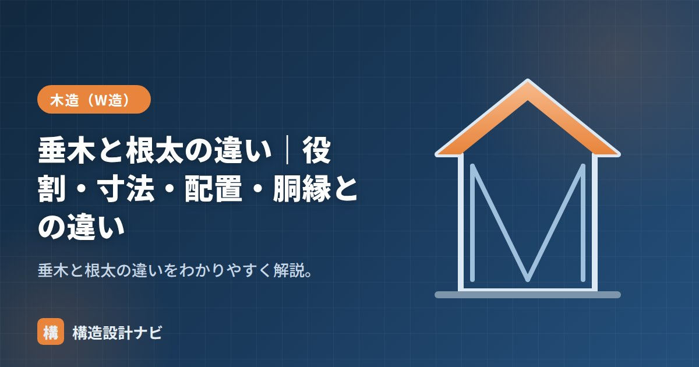

垂木と根太の違い｜役割・寸法・配置・胴縁との違い

垂木（たるき）と根太（ねだ）は、どちらも仕上げの下地を支える細い横架材ですが、垂木は屋根、根太は床に使う点が違います。断面寸法が似ているため混同されがちですが、受ける荷重の向きや伝わり方はまったく異なります。壁の下地材である胴縁とも比較して整理します。
- 垂木は屋根荷重を母屋・棟木へ、根太は床荷重を大引・床梁へ伝える下地材。
- 寸法・間隔は屋根の勾配や積雪荷重、床の用途（スパン・積載荷重）に応じて選ぶ。
- 近年の床組では、根太を用いない「根太レス工法」も普及している。
垂木と根太の違い
| 垂木（たるき） | 根太（ねだ） | |
|---|---|---|
| 場所 | 屋根 | 床 |
| 役割 | 野地板を支え屋根荷重を母屋へ | 床板を支え荷重を大引・床梁へ |
| 向き | 屋根の勾配方向 | 水平 |
| 寸法 | 45×45〜45×60程度 | 45×45〜45×60程度 |
| 間隔 | 455mm程度 | 303〜455mm程度 |
力の伝わり方
垂木は屋根の勾配なりに斜めに架けられ、瓦や屋根材の重さに加え、雪の重さ（積雪荷重）や風による吹き上げの力も受け止めます。一方、根太は水平に架けられ、人や家具などの積載荷重を主に受けます。同じような太さの材でも、負担する荷重の性質が異なるため、それぞれ別の考え方で寸法や間隔を決める必要があります。
寸法・間隔の決め方
垂木の寸法や間隔は、屋根材の重さ・積雪の多い地域かどうか・垂木が支える屋根面（水平構面）としての強さなどを踏まえて決めます。瓦屋根のように重い屋根材では、金属屋根より太い垂木や狭い間隔が必要になることがあります。根太の寸法・間隔は、上に乗る床仕上げの種類や、床が受ける積載荷重、大引までのスパンによって決まります。どちらも「たわみすぎない」ことが基本の条件です。
根太レス工法との違い
近年の木造住宅では、根太を用いず、厚みのある構造用合板を直接大引や床梁に張る「根太レス工法」も広く使われています。根太を省略するぶん床の高さを抑えられ、合板自体が面として床の水平構面の役割を果たすため、床の水平剛性を確保しやすいという利点があります。垂木についても、垂木を用いず厚い屋根下地材を直接梁に張る工法がありますが、住宅では従来どおり垂木を用いる屋根が一般的です。
胴縁との違い
胴縁（どうぶち）は壁の下地材で、外壁材や内装ボードを留めるための細い材です。屋根の垂木・床の根太が構造的に荷重を支えるのに対し、胴縁は主に仕上げ材を取り付ける下地という違いがあります。
垂木と根太は寸法が似ているため、現場で材料を取り違えて使ってしまうことがあります。垂木用の材を根太に転用すると、想定していた荷重条件（積雪荷重など）とは異なる条件で使うことになり、逆に根太用の材を垂木に使うと屋根荷重に対して不足するおそれがあります。図面や材料の搬入時に、用途を明確に区別して管理することが大切です。
若手への説明で気をつけているのは、垂木と根太を同じ下地材として一括りに覚えさせないことです。断面寸法が似ているぶん搬入時の置き場を分けておかないと、現場で用途違いの材料を使ってしまう事故につながります。
垂木・根太・胴縁の位置関係（図解）
垂木の寸法と間隔の決め方
垂木の断面は、①屋根の重さ（瓦かガルバリウムか）②積雪量 ③母屋の間隔（＝垂木のスパン）の3つで決まります。
| 条件 | 垂木の断面 | 間隔 | 備考 |
|---|---|---|---|
| 金属屋根・一般地域 | 45×60mm | @455mm | もっとも一般的 |
| 瓦屋根・一般地域 | 45×75〜45×90mm | @455mm | 屋根が重いぶん断面増 |
| 多雪区域（積雪1m） | 45×105mm以上 | @303〜455mm | 積雪荷重が支配的になる |
| 母屋間隔が広い（1,820mm） | 45×105mm程度 | @455mm | スパンに応じて断面増 |
垂木の間隔が455mmに集中しているのは、野地板（構造用合板）が910×1,820mmで流通しているためです。455mm間隔なら合板の910mm幅がちょうど3本の垂木にかかり、継ぎ目が必ず垂木の上にきます。材料の寸法が部材の間隔を決めているという、木造ならではの合理性です。
垂木というと「屋根の重さを支える材」と思われがちですが、台風時に問題になるのは逆向きの力——風による吹き上げ（負圧）です。屋根の上を風が流れると揚力が生じ、屋根を持ち上げようとします。とくに軒先や棟、けらば（妻側の端部）では負圧が大きくなります。
このため垂木と母屋の接合にはひねり金物を必ず使います。釘打ちだけでは引き抜きに抵抗できず、台風で屋根が飛ぶ原因になります。断面計算だけでなく、接合部の引き抜き対策が垂木の設計では同じくらい重要です。
よくある質問
Q1. 垂木と根太の違いは何ですか？
使う場所が違います。垂木は屋根で、母屋の上に斜めに並べて野地板を受けます。根太は床で、大引や梁の上に水平に並べて床板を受けます。どちらも「細い材を一定間隔で並べて面材を受ける」という役割は共通ですが、屋根用か床用かで呼び名が変わります。
Q2. 垂木の間隔はなぜ455mmが多いのですか？
構造用合板が910×1,820mmで流通しているためです。455mm間隔なら合板の910mm幅がちょうど3本の垂木にかかり、継ぎ目が必ず垂木の上に載ります。材料寸法に合わせることで、切り無駄がなく、留め付けも確実になります。
Q3. 胴縁は構造材ではないのですか？
原則として下地材です。外壁の仕上げ材を留めるためのもので、建物の重さや地震力は負担しません。ただし外壁材の風圧力は胴縁を経由して構造体に伝わるため、風圧に対する留め付けの検討は必要です。
まとめ
- 垂木は屋根、根太は床の下地を支える材。向き（勾配/水平）と受ける荷重の性質が違う。
- 垂木は母屋へ、根太は大引・床梁へ荷重を伝える。寸法・間隔は荷重条件に応じて決める。
- 床では根太を省く根太レス工法も普及し、床の水平剛性を確保しやすい。
- 胴縁は壁の仕上げ下地で、構造材の垂木・根太とは役割が異なる。